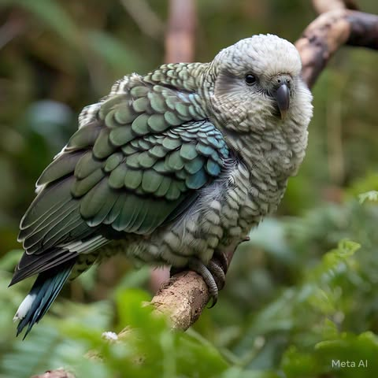

Bird Population Data
| Bird Name | Weight | Number of Remaining Birds |
|---|---|---|
| Kea | 0.8 - 1 kg | ~5,000 |
| Tūī | 90 - 120g | Stable (3,500-15,000) |
| Kākāpō | 2 - 4 kg | 252 (as of 2023) |
| Kiwi | 1.2 - 3.3 kg | ~68,000 |
Kea (Nestor notabilis)
The Kea is a highly intelligent and playful parrot native to the South Island of New Zealand. It is known for its curiosity and problem-solving abilities.
Tūī(Prosthemadera novaeseelandiae)
The Tūī is a melodious songbird known for its iridescent plumage and remarkable vocal abilities. It plays an important role in pollination.
Kākāpō (Strigops habroptilus)
The Kākāpō is a critically endangered, nocturnal, flightless parrot. It is the heaviest parrot in the world and has a unique musky scent.
Kiwi (Apteryx australis)
The Kākāpō is a critically endangered, nocturnal, flightless parrot. It is the heaviest parrot in the world and has a unique musky scent.